ダッシュボード管理タブ¶
ダッシュボードの「管理」タブにあるArchivematicaの管理ページでは、アプリケーションコンポーネントの設定やユーザーの管理を行うことができます。
このページでは：
処理設定¶
ダッシュボードの処理設定管理ページでは、転送やインジェストの際にArchivematicaが提示するジョブの決定ポイントを設定できます。Archivematicaをインストールした場合、2つのデフォルトの処理設定があります：
Defaultは、 転送タブ から手動で開始される転送、 自動化ツール から自動的に開始される転送、または他の処理設定が指定されていないその他のコンテキストで使用されます。Automatedは、Jisc RDSS環境から自動的に開始される転送に使用されます（Jiscユーザーでない場合は、この設定を削除できます）。
{kind=link}
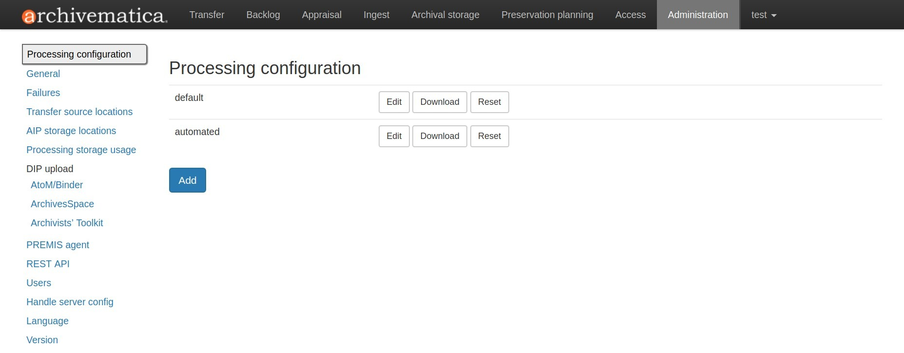
編集 をクリックすると、これらの決定を管理するデフォルトのprocessingMCP.xmlを設定できるフォームが表示されます。 追加 をクリックすると、新しい処理設定を作成できます。ウェブ・インターフェースを使用してオプションを変更すると、必要なXMLが裏で書き込まれます。
{kind=link}
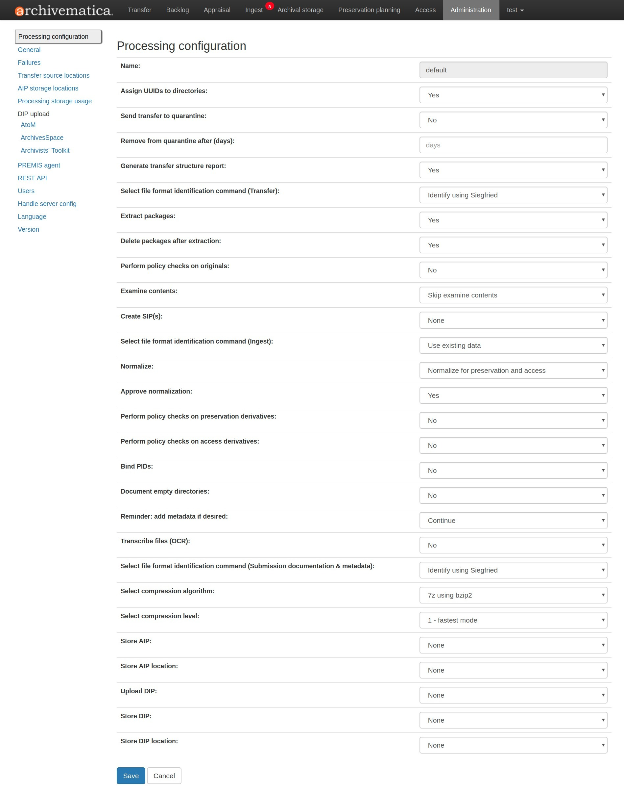
Archivematicaダッシュボードでの処理決定の設定については、ユーザーマニュアルの 処理設定 ページを参照してください。処理設定ページには、すべての決定ポイントとそのオプションのリストがあります。
リセット をクリックすることで、デフォルトおよび自動処理設定をプリセットに戻すこともできます。デフォルト処理設定のプリセットは、ユーザーマニュアルの 処理設定 に記載されています。
このフォームへの変更は、 processingMCP.xml と名前のファイルに書き込まれます。Archivematicaダッシュボードで転送を開始すると、自動的にデフォルトのprocessingMCP.xmlが使用されます。
カスタム処理設定ファイルの使用¶
より高度なワークフローで、複数の処理コンフィギュレーションを作成したい場合は、例えば、デフォルトのコンフィギュレーションに加えて、ビデオファイルに特化したコンフィギュレーションを作成したい場合があります。ユーザーインターフェイスから、 追加 ボタンをクリックして、新しい処理設定を追加できます。
カスタム処理設定を作成したら、 ダウンロード をクリックしてXMLファイルをダウンロードできます。このファイルの名前を processingMCP.xml に変更します。このファイルを転送のルートディレクトリに置きます。Archivematicaは、デフォルトの設定ではなく、このファイルを使用して処理を決定します。
processingMCP.xmlは、特定のXMLフォーマットに従っています：
<processingMCP>
<preconfiguredChoices>
<!-- Display metadata reminder -->
<preconfiguredChoice>
<appliesTo>eeb23509-57e2-4529-8857-9d62525db048</appliesTo>
<goToChain>5727faac-88af-40e8-8c10-268644b0142d</goToChain>
</preconfiguredChoice>
<!-- Extract packages -->
<preconfiguredChoice>
<appliesTo>dec97e3c-5598-4b99-b26e-f87a435a6b7f</appliesTo>
<goToChain>01d80b27-4ad1-4bd1-8f8d-f819f18bf685</goToChain>
</preconfiguredChoice>
<!-- Delete extracted packages -->
<preconfiguredChoice>
<appliesTo>f19926dd-8fb5-4c79-8ade-c83f61f55b40</appliesTo>
<goToChain>85b1e45d-8f98-4cae-8336-72f40e12cbef</goToChain>
</preconfiguredChoice>
<!-- Select pre-normalize file format identification command -->
<preconfiguredChoice>
<appliesTo>7a024896-c4f7-4808-a240-44c87c762bc5</appliesTo>
<goToChain>3c1faec7-7e1e-4cdd-b3bd-e2f05f4baa9b</goToChain>
</preconfiguredChoice>
<!-- Select compression algorithm -->
<preconfiguredChoice>
<appliesTo>01d64f58-8295-4b7b-9cab-8f1b153a504f</appliesTo>
<goToChain>9475447c-9889-430c-9477-6287a9574c5b</goToChain>
</preconfiguredChoice>
<!-- Select compression level -->
<preconfiguredChoice>
<appliesTo>01c651cb-c174-4ba4-b985-1d87a44d6754</appliesTo>
<goToChain>414da421-b83f-4648-895f-a34840e3c3f5</goToChain>
</preconfiguredChoice>
</preconfiguredChoices>
</processingMCP>
appliesTo は、ダッシュボードに表示されるマイクロサービスのジョブに関連するUUIDです。 goToChain は、希望する選択のUUIDであることに注意してください。
一般¶
一般設定ページでは、ArchivematicaインスタンスをStorage Serviceに接続し、処理で使用するデフォルトのチェックサムアルゴリズムを設定します。
{kind=link}
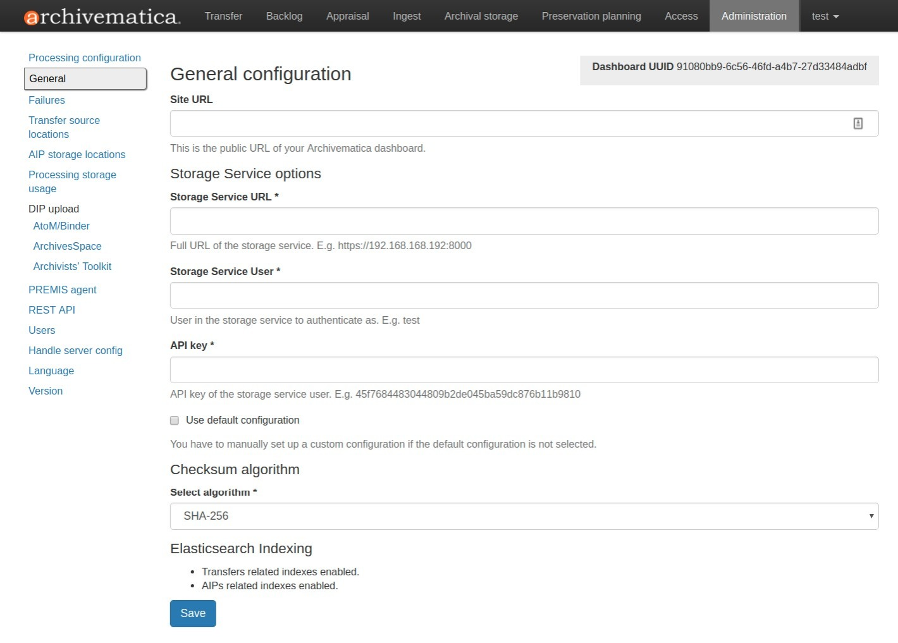
ダッシュボードの「管理」タブにある一般設定オプション¶
一般設定¶
フィールド：
サイトURL ：Archivematicaダッシュボードの公開URLです。このフィールドはオプションです。
注釈
Archivematicaは、Storage Serviceに登録しようとします。Archivematicaを固定URLまたはIPアドレスでインストールした場合は、ここでサイトURLを設定する必要はありません。ただし、URLまたはIPアドレスが変更されることが予想される場合は、時間が経っても変更されないURLを使用する必要があります。
Storage Serviceオプション¶
Archivematicaのストレージスペースとロケーションは、Storage Serviceと呼ばれるバックエンドアプリケーションによって制御されます。Storage Serviceの詳細については、 Storage Service文書 を参照してください。
フィールド：
Storage Service URL ：Storage Serviceの完全なURL。例https://192.168.168.192:8000
Storage Serviceユーザー ：認証するStorage Serviceのユーザー。Storage Serviceの認証情報をStorage Serviceの管理タブから取得します。
APIキー ：Storage ServiceユーザーのAPIキー。Storage Serviceの管理タブからStorage Serviceの認証情報を取得します。
デフォルト構成を使用 ：デフォルトのスペースと場所の構成を使用してStorage Serviceをデプロイした場合は、このボックスにチェックを入れます。カスタム構成を設定した場合は、チェックを外します。
チェックサムアルゴリズム¶
転送における Assign UUIDs and checksums マイクロサービスで、Archivematicaがどのチェックサムアルゴリズムを使用するかを選択できます。MD5、SHA-1、SHA-256、SHA-512から選択します。
Elasticsearchインデックス作成¶
Archivematica 1.7では、Elasticsearchのインストールはオプションです。Elasticsearchは、 Backlog 、 Appraisal 、 Archival Storage の検索に使用されるインデックスを生成します。Elasticsearchを使用せずにArchivematicaをインストールすると、コンピューティングリソースの消費量が削減され、運用の複雑さが軽減されます。Elasticsearchを無効にすると、ユーザーインターフェースにBacklog、Appraisal、Archival Storageのタブが表示されなくなり、これらの機能が利用できなくなります。
一般設定のこのセクションは、Elasticsearchが有効か無効かを示します。
{kind=link}
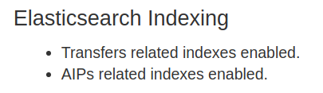
この例では、転送とAIPの両方でインデックスが有効です。¶
転送（「Backlog」と「Appraisal」タブ）、AIP（「Archival Storage」タブ）、またはその両方のインデックス作成を無効にすることが可能です。Elasticsearchの無効化に関する詳細は、管理者マニュアルの Elasticsearch を参照してください。
障害¶
このページは、処理中に障害が発生したパッケージを表示します。
{kind=link}
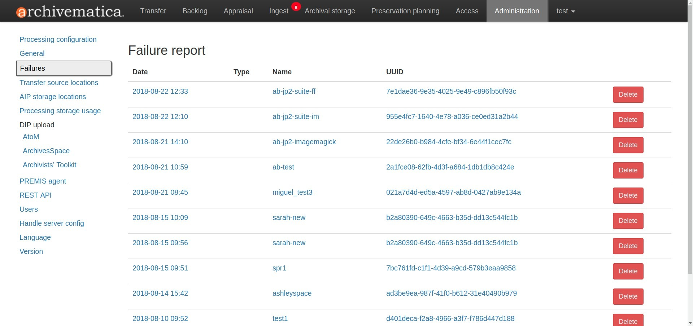
ダッシュボードの障害レポート¶
日付、名前、またはUUIDをクリックすると、障害レポートが表示されます：
{kind=link}
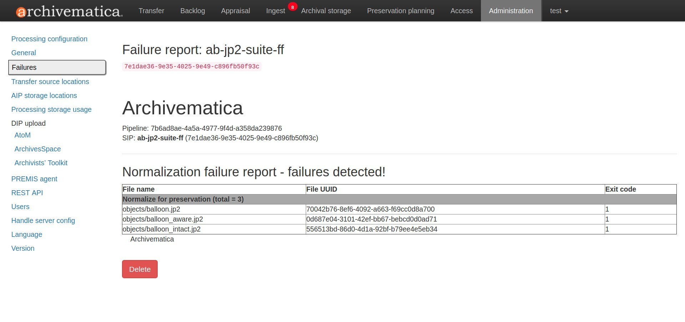
障害レポートは、削除をクリックすることでダッシュボードから削除できます。
転送元の場所¶
Archivematicaでは、オペレーティングシステムのファイルブラウザまたはWebインターフェイスを使用して転送を開始できます。ただし、ウェブインターフェースを使用してアップロードすることはできません。これらは、Archivematica MCPサーバーにアクセス可能なボリューム上に存在し、Storage Serviceを介して設定されなければなりません。
転送を開始するときは、転送に追加するファイルの1つまたは複数のディレクトリを選択する必要があります。
AIPの保存場所¶
AIP保管ディレクトリは、完成したAIPが保管されるディレクトリです。ストレージディレクトリは、Storage Serviceを使用して、転送元ディレクトリと同様の方法で指定できます。
"AIPストレージ場所"の下にあるダッシュボードの管理タブで、転送元ディレクトリを表示できます。
処理ストレージ使用状況¶
この管理ページのセクションは、利用可能なスペースの現在の使用状況とともに、様々な処理場所を表示します。
{kind=link}
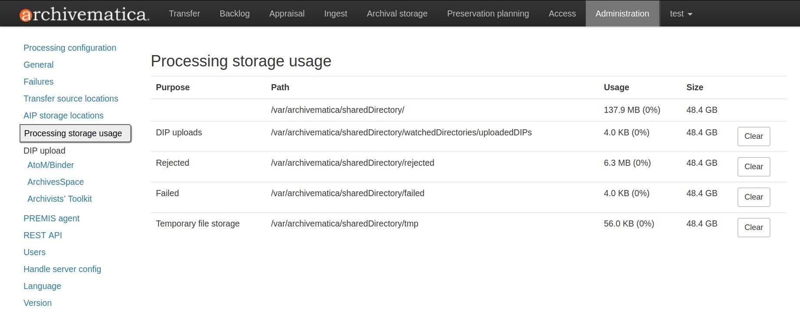
管理者は、"clear"ボタンを使用して、これらの処理場所のコンテンツを削除し、サーバーの空き容量を増やすことができます。
DIPアップロード¶
Archivematica has access integrations with two access platforms: AtoM and ArchivesSpace.
AtoM DIPアップロード¶
Archivematica can upload DIPs directly to an AtoM website so that the contents can be accessed online.
The AtoM DIP upload configuration page is where you specify the details of the AtoM installation you'd like the DIPs uploaded to (and, if using Rsync to transfer the DIP files, Rsync transfer details).
Before setting these details, please ensure that you have a working AtoM site that is properly connected to Archivematica. See Using AtoM 2.x with Archivematica for more information.
{kind=link}
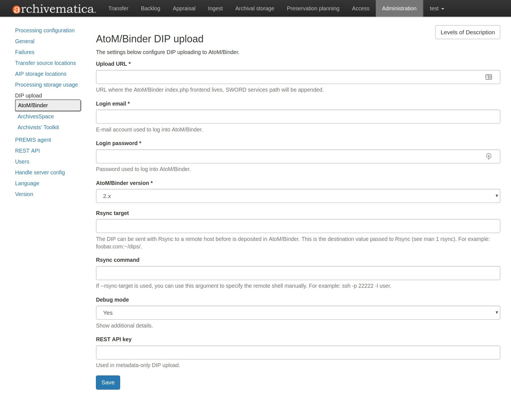
フィールド：
Upload URL: the URL of the destination AtoM website.
Login email: the email address used to log in to AtoM.
Login password: the password used to log in to AtoM.
AtoM version: the version of the destination AtoM website.
Rsync target: if you'd like to send the DIP with Rsync before it is deposited in AtoM, enter the destination value for rsync, e.g.
foobar.com:/dips. This field is optional.Rsyncコマンド ：Rsyncターゲットを入力した場合に、リモート・シェルを手動で指定します（例：
ssh -p 22222 -l user）。このフィールドはオプションです。デバッグモード ：障害レポートに詳細を追加したい場合は、"はい"を選択して、デバッグモードも有効にします。
AtoM DIPアップロード¶
AtoMがリモートサーバーにインストールされている場合、Archivematicaは、SSHとrsyncを使用してDIPをAtoMサーバーの一時ディレクトリにコピーします。ArchivematicaとAtoMが共通のファイルシステム（共有ネットワークディレクトリなど）を共有している場合、このステップは不要です。
Archivematicaは、RESTリクエストをAtoMに送信し、DIPのターゲットとなるアーカイブ記述をAtoMに伝えます。DIPターゲットの記述は、記述の"スラッグ"によって識別されます。AtoMへのDIPコンテンツの実際のアップロードは、バックグラウンドジョブを介して行われ、大規模なDIPがアップロードされる場合、処理に時間がかかることがあります。
AtoMのバックグラウンドワーカーは、一時ディレクトリからDIPメタデータ（METSファイル）とデジタルオブジェクトをAtoMにアップロードし、それらをターゲット記述にリンクした後、一時ファイルを削除します。
また、AtoMのユーザーインターフェイスにも変更を加える必要があります：
AtoMがアップロードされたDIPを受信するには、SWORDプラグイン（Admin --> Plugins --> qtSwordPlugin）を有効にする必要があります。
バージョン2.1以下では、ジョブスケジューリング（Admin --> Settings -->ジョブスケジューリング）を有効にすることも推奨されます。
/tmp 以外の場所にSWORDデポジットを使用する場合、この場所はグローバル設定（Admin --> Settings --> Global --> SWORDデポジットディレクトリ）で設定する必要があります。
AtoM DIPアップロードは、転送メカニズムとしてRsyncを使用できます。Rsyncは、ファイルを効率的に転送するためのオープンソースユーティリティです。rsync-targetパラメーターは、Rsyncスタイルのターゲットホスト/ディレクトリのペアを指定するために使用します（例えば、 foobar.com:~/dips/ ）。rsync-commandパラメーターは、rsync接続オプションを指定するために使用します（例えば、 ssh -p 22222 -l user ）。rsyncオプションを使用する場合は、以下のAtoMサーバー設定を参照してください。
AtoM DIPアップロードのパラメーターを設定するには、 Command arguments フィールドで、指定されている既存の形式を保持したまま値を変更し、"保存"をクリックします。
注釈
メタデータのみのAtoMへのDIPアップロード 機能を使用する場合は、AtoMのAPIプラグイン を有効にし、APIキーを生成し、それに応じて REST API key フィールドを更新することを忘れないでください。メタデータのみのDIPアップロードは、AtoM 2.4以上を使用している場合のみ利用可能です。
AtoMサーバーの設定¶
このサーバー設定手順は、ArchivematicaがパスワードなしでAtoMサーバーにログインできるようにするために必要であり、ユーザーが上記のAtoM DIPアップロードセクションで説明したrsyncオプションを展開している場合にのみ必要です。
ArchivematicaからAtoMサーバーへのDIP送信を有効にします：
ArchivematicaユーザーのSSHキーを生成します。パスフレーズ欄は空白のままにします。
$ sudo -u archivematica ssh-keygen
/var/lib/archivematica/.ssh/id_rsa.pub の内容を手近な場所にコピーしておいてください。後で必要になります。
次に、ArchivematicaがSSH/rsyncを使用してDIPを送信できるようにAtoMサーバーを設定します。そのために、 archivematica というユーザーを作成し、そのユーザーにrsyncのみにアクセスできる制限付きシェルを割り当てます：
$ sudo apt-get install rssh
$ sudo useradd -d /home/archivematica -m -s /usr/bin/rssh archivematica
$ sudo passwd -l archivematica
$ sudo vim /etc/rssh.conf // Make sure that allowrsync is uncommented!
先ほど生成したSSHキーを追加します：
$ sudo mkdir /home/archivematica/.ssh
$ chmod 700 /home/archivematica/.ssh/
$ sudo vim /home/archivematica/.ssh/authorized_keys // Paste here the contents of id_dsa.pub
$ chown -R archivematica:archivematica /home/archivematica
注釈
AtoM 2.7では、DIPをAtoMにアップロードした後にSWORDデポジットからDIPディレクトリを削除する新機能が追加されました。AtoMがこのディレクトリを削除するには、AtoMユーザー（デフォルトでは www-data または nginx ）がこのディレクトリへの書き込み権限を持っている必要があります。最も簡単な方法は、setfaclコマンドを使用することです。
UbuntuまたはRocky Linuxに acl パッケージをインストールします：
sudo apt-get install acl # Ubuntu
sudo yum install acl # Rocky Linux
新しいSWORDデポジット・ディレクトリを作成します（Rocky Linuxでは、 www-data の代わりに、 nginx グループを使用します）：
sudo mkdir /home/archivematica/atom_sword_deposit
sudo chown archivematica:www-data /home/archivematica/atom_sword_deposit
sudo chmod 770 /home/archivematica/atom_sword_deposit
新しいディレクトリにACLを設定します（Rocky Linuxでは、 www-data の代わりに、 nginx ユーザーを使用します）：
sudo setfacl -d -m u:www-data:rwX /home/archivematica/atom_sword_deposit
The ACL sets `rw-` permissions for files and `rwx` permissions for
directories for the nginx user and then the `www-data` (or `nginx`) user can
delete the temporay DIP directory.
Archivematicaで、 --rsync-target を適宜更新してください。これらは、upload-qubitマイクロサービスに渡すパラメーターです。ダッシュボードでAdministration > Upload DIPページに移動します。
一般的なパラメーター：
--url="http://atom-hostname/index.php" \
--email="demo@example.com" \
--password="demo" \
--uuid="%SIPUUID%" \
--rsync-target="archivematica@atom-hostname:/tmp" \
--debug
ArchivesSpace DIPアップロード¶
ArchivesSpaceにデジタルオブジェクトをインジェストする前に、ダッシュボードの管理タブにあるArchivesSpace DIPアップロード設定が設定されていることを確認してください。
これらの設定は、ArchivesSpaceにアップロードするデジタルオブジェクトを処理する前に作成し、保存する必要があります。これらの設定は一度設定すれば、何度でも転送処理に使用できることに注意してください（つまり、転送ごとに再設定する必要はありません）。
{kind=link}
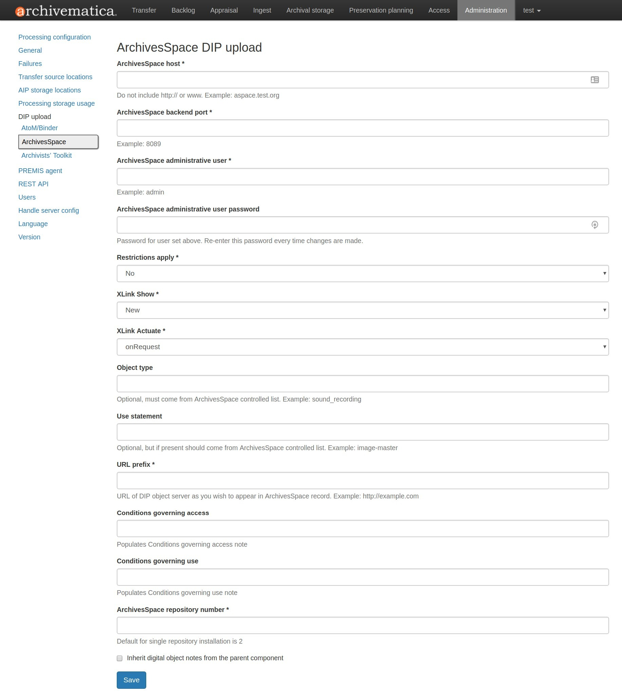
フィールド：
ArchivesSpaceホスト ：ホストデータベースのURL。
https://やwww.を含めないでくださいaspace.test.org。ArchivesSpaceバックエンドポート ：データベースのポート（例：
8089）。ArchivesSpace管理ユーザー ：ArchivesSpaceの管理者権限を持つユーザーのユーザー名。
ArchivesSpace管理ユーザーパスワード ：上記で設定したユーザーのパスワード。この設定を変更した場合は、パスワードを再入力する必要があります。
制限の適用 ： はい を選択すると、ArchivesSpaceにアップロードされたすべてのコンテンツにアクセス制限が適用されます。 いいえ を選択すると、すべてのコンテンツが制限なしでAchievemeticaからArchivesSpaceに送信されます。PREMISベースの制限機能を有効にするには、 Base on PREMIS を選択します。
XLink表示 ：ArchivesSpaceに表示されるデジタルオブジェクトへのリンクの動作を指定します。
埋め込み ：デジタルオブジェクト画面が現在のウィンドウに埋め込まれます。
新規 ：デジタルオブジェクトの画面が新しいウィンドウで開きます。
なし ：特定の振る舞いはリンクに渡されません。
その他 ：特定の振る舞いはリンクに渡されません。
置き換え ：デジタルオブジェクト画面が現在のウィンドウで開きます。
XLinkアクチュエート ：デジタルオブジェクトがArchivesSpaceに表示されるタイミングを示します（例：リンクが自動的に行われるか、ユーザーが要求しなければならないか）。XLink Show属性と組み合わせて使用します。
なし ：特定の振る舞いはリンクに渡されません。
onLoad ：文書が読み込まれたときにリンクがアクティブになります（Show = Embedのときに使用します）。
その他 ：特定の振る舞いはリンクに渡されません。
onRequest ：ユーザーがリンクを選択すると、リンクがアクティブになります。
オブジェクトタイプ ：ArchivesSpaceが管理するオブジェクトタイプのリストから値を入力すると、この値がすべてのオブジェクトに適用されます。このフィールドはオプションです。
使用ステートメント ：ArchivesSpaceの使用ステートメントの管理リストから値を入力すると、この値がすべてのオブジェクトに適用されます。このフィールドはオプションです。
URL prefix ：ArchivesSpaceレコードに表示したいDIPオブジェクトサーバーのURL。（例：
http://example.com）アクセスを管理する条件 ：このフィールドに値を入力すると、ArchivesSpaceのアクセスを管理する条件メモにすべてのオブジェクトの値が入力されます。
ユーザーを管理する条件 ：このフィールドに値を入力すると、ArchivesSpaceのすべてのオブジェクトのユーザーを管理する条件メモに入力されます。
ArchivesSpaceリポジトリ番号 ：DIPをアップロードするArchivesSpaceリポジトリの識別子。単一リポジトリArchivesSpaceインスタンスのデフォルト識別子は 2 です。
注釈
ArchivesSpace DIPアップロード設定の変更を保存するには、保存をクリックする前にパスワードを入力する必要があります。パスワードが入力されていない場合、Archivematicaは、エラーを表示 しません のでご注意ください。
PREMISエージェント¶
PREMISエージェント名とコードは、管理インターフェイスを通じてここで設定できます。
{kind=link}
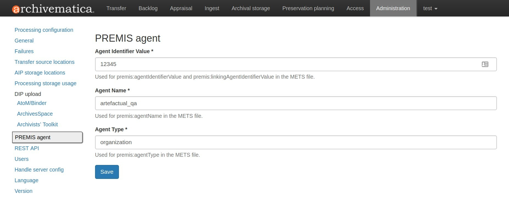
PREMISエージェント情報は、Archivematicaが作成するMETSファイルで、デジタル保存イベントを実行するエージェンシーを特定するために使用されます。
Rest API¶
processingMCP.xml ファイルを使用した自動化に加え、Archivematicaには転送承認を自動化するためのREST APIが用意されています。このAPIを使用すると、転送を適切なディレクトリにコピーするカスタムスクリプトを作成し、curlコマンドなどを使用して、Archivematicaにコピーの完了を知らせることができます。
APIキー¶
REST APIを使用するには、APIキーの使用が必要です。APIキーは特定のユーザーに関連付けられています。ユーザーのAPIキーを生成するには：
administration/accounts/list/にアクセスしてください。
APIキーを生成したいユーザーの"編集"ボタンをクリック
"API keyの再生成"チェックボックスをクリック
"保存"をクリック
APIキーを生成した後、そのユーザーの"編集"ボタンをクリックすると、APIキーが表示されます。
IPホワイトリスト¶
APIキーは常に必要ですが、管理者がさらにセキュリティ対策を追加したい場合もあります。IPホワイトリストを使用すると、APIにアクセスできる信頼できるIPアドレスのリストを作成できます。
IPホワイトリストは、管理インターフェイスの /administration/api/ で編集できます。ホワイトリストが空の場合、すべてのリクエストが許可されます。
転送の承認¶
REST APIを使用して転送を承認できます。転送はまず、適切なウォッチディレクトリにコピーされなければなりません。適切なウォッチディレクトリの場所を特定するには、まず /etc/archivematica/MCPServer/serverConfig.conf のwatchDirectoryPath値から共有ディレクトリの場所を特定します。そのディレクトリ内には、サブディレクトリactiveTransfersがあります。このサブディレクトリには、様々な転送タイプのウォッチディレクトリがあります。
REST APIを使用して転送を承認する際に、転送タイプが指定されていなければ、転送は標準転送とみなされます。
HTTPメソッド ：POST
URL ：/api/transfer/approve
パラメーター ：
directory ：転送先のディレクトリ名
type （オプション）：転送タイプ[標準 | dspace | アンジップしたバッグ | ジップしたバッグ]
api_key ：API キー
username ：APIキーに関連付けられたユーザー名
curlコマンドの例：
curl --data "username=rick&api_key=f12d6b323872b3cef0b71be64eddd52f87b851a6&type=standard&directory=MyTransfer" http://127.0.0.1/api/transfer/approve
結果の例：
{"message": "Approval successful."}
未承認転送のリストアップ¶
REST APIを使用すると、未承認転送のリストを取得できます。各転送のディレクトリ名とタイプが返されます。
メソッド ： GET
URL ： /api/transfer/unapproved
パラメーター ：
api_key ：API キー
username ：APIキーに関連付けられたユーザー名
curlコマンドの例：
curl "http://127.0.0.1/api/transfer/unapproved?username=rick&api_key=f12d6b323872b3cef0b71be64eddd52f87b851a6"
結果の例：
{
"message": "Fetched unapproved transfers successfully.",
"results": [{
"directory": "MyTransfer",
"type": "standard"
}
]
}
ユーザー¶
ダッシュボードは、 Django認証フレームワーク を使った、シンプルなクッキーベースのユーザー認証システムを提供します。ダッシュボードへのアクセスはログインユーザーのみに制限され、ユーザーが認識されない場合はログインページが表示されます。アプリケーションがデータベースでユーザーを見つけられない場合は、代わりにユーザー作成ページが表示され、管理者アカウントを作成できます。
「管理」タブからユーザーを作成、変更、削除することも可能です。管理者であるユーザーのみがユーザーアカウントを作成および編集できます。
ユーザー管理ページの"新規追加"ボタンをクリックすると、新しいユーザーを追加できます。ユーザーを追加することで、ユーザー名とパスワードの組み合わせでArchivematicaにアクセスできるようになります。ユーザーのユーザー名またはパスワードを変更する必要がある場合は、管理ページで該当するユーザーの"編集"ボタンをクリックします。ユーザーのアクセス権を取り消す必要がある場合は、対応する"削除"ボタンをクリックします。
CLIによる管理ユーザーの作成¶
追加の管理者ユーザーが必要な場合は、コマンドラインで以下のコマンドを実行してください：
sudo -u archivematica bash -c " \
set -a -e -x
source /etc/default/archivematica-dashboard || \
source /etc/sysconfig/archivematica-dashboard \
|| (echo 'Environment file not found'; exit 1)
cd /usr/share/archivematica/dashboard
/usr/share/archivematica/virtualenvs/archivematica/bin/python manage.py createsuperuser
";
CLIパスワードのリセット¶
管理者ユーザーやその他のユーザーのパスワードを忘れてしまった場合は、コマンドラインから変更できます：
sudo -u archivematica bash -c " \
set -a -e -x
source /etc/default/archivematica-dashboard || \
source /etc/sysconfig/archivematica-dashboard \
|| (echo 'Environment file not found'; exit 1)
cd /usr/share/archivematica/dashboard
/usr/share/archivematica/virtualenvs/archivematica/bin/python manage.py changepassword <username>
";
CLI設定パイプラインとStorage Serviceへの登録¶
新規インストールでは、GUIの代わりにコマンドラインを使用して、スーパーユーザーを設定し、Storage Serviceにパイプラインを登録できます。これらのコマンドは、初期設定画面のGUIとまったく同じように、パイプラインを設定し、Storage Serviceに登録します：
sudo -u archivematica bash -c " \
set -a -e -x
source /etc/default/archivematica-dashboard || \
source /etc/sysconfig/archivematica-dashboard \
|| (echo 'Environment file not found'; exit 1)
cd /usr/share/archivematica/dashboard
/usr/share/python/archivematica-dashboard/bin/python manage.py install \
--username=<username> \
--password=<password> \
--email=<email-address> \
--org-name=<org-name> \
--org-id=<org-id> \
--api-key=<api-key>\
--ss-url=<ss-ulr> \
--ss-user=<ss-username> \
--ss-api-key=<ss-api-key> \
--whitelist=<whitelist>
";
ここでは：
api-key：ユーザー名<username>に追加されるAPIキー。例："test","4e5f32ab2aefd3577e1b19a2de5d4dd65f90101a".ss-url：Archivematica Storage ServiceのURL。例：http://example.archivematica.org:8000.ss-user：パイプラインの登録に使用するStorage Serviceのユーザー名。このユーザー名はすでにStorage Serviceに存在している必要があります。ss-api-key：<ss-username>APIキー。このキーは、ユーザー<ss-username>のStorage Serviceに既に存在していなければなりません。whitelist：APIの使用を許可するIPアドレスまたはホスト名の空白区切りリスト。ホワイトリストを空にすると、すべてのIPアドレスとホスト名が許可されます。例："192.168.1.3 example.archivematica.org 127.0.0.1"または"".
このコマンドは、Ansibleを使用してデプロイする場合など、自動化されたインストールで使用するのに最も適しています。手動でインストールする場合は、インストール後の設定のセクションで説明されているウェブ設定を使用してください：
セキュリティ¶
Archivematicaは、 PBKDF2 をデフォルトのアルゴリズムとしてパスワードを保存します。ほとんどのユーザーにとってはこれで十分でしょう。このアルゴリズムは非常に安全で、破るには膨大な計算時間が必要となります。しかし、以下の文書が説明しているように、他のアルゴリズムも使えます： Djangoがパスワードを保存する方法 .
私たちの計画では、将来的にこの機能を拡張し、グループときめ細かなパーミッションのサポートを追加する予定です。
サーバー設定の処理¶
Archivematicaは、設定された Handle.Net レジストリにPIDを定義することで、デジタルオブジェクト、ディレクトリ、またはAIPの永続識別子（PID）を作成できます。Handle.Netは、PIDから永続URL（PURL）を作成し、永続URLへのリクエストをHandle.Netで設定されたターゲットURLにリルートできます。
注釈
Handle.Net設定を使用するには、利用可能なウェブサービスを提供する必要があります。互換性のあるウェブサービスの例として、 IISHで使用されているPIDウェブサービス を参照してください。
{kind=link}
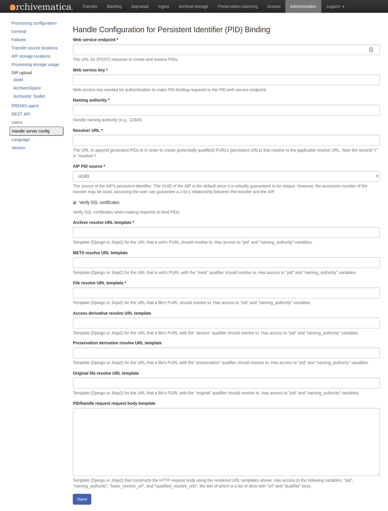
フィールド：
ウェブサービスのエンドポイント ：PIDの作成と解決のための（POST）リクエスト用URL。
Webサービスキー ：PIDウェブサービスエンドポイントへのPIDバインディングリクエストの認証に必要なウェブサービスキー。
命名権 ：ハンドル命名権（例：12345）
リゾルバURL ：該当するresolve URLに解決する（潜在的に修飾された）PURL（永続的なURL）を作成するために、生成されたPIDを付加するURL。"リゾルバ"の2番目の"r"に注意！
AIP PIDソース ：AIPの永続的識別子のソース。事実上一意であることが保証されているため、AIPのUUIDがデフォルトです。ただし、ユーザーが転送とAIPの間の1対1の関係を保証できるのであれば、転送のアクセッション番号を使用できます。
SSL証明書の妥当性確認 ：このボックスを選択すると、ArchivematicaがPIDをバインドするリクエストの際にSSL証明書を妥当性確認します。
Archive解決URLテンプレート ：ユニットのPURLが解決すべきURLのテンプレート（DjangoまたはJinja2）。
pidとnaming_authority変数にアクセスできます。例：https://access.myinstitution.org/dip/{{ naming_authority }}/{{ pid }}METS解決URLテンプレート ："mets"修飾子を持つユニットのPURLが解決すべきURLのテンプレート（DjangoまたはJinja2）。"pid"と"naming_authority"変数にアクセスできます。例：
https://access.myinstitution.org/mets/{{ naming_authority }}/{{ pid }}ファイル解決URLテンプレート ：ファイルのPURLが解決すべきURLのテンプレート（DjangoまたはJinja2）。"pid"と"naming_authority"変数にアクセスできます。例：
https://access.myinstitution.org/access/{{ naming_authority }}/{{ pid }}アクセス派生解決URLテンプレート ："access"修飾子を持つファイルのPURLが解決すべきURLのテンプレート（DjangoまたはJinja2）。"pid"と"naming_authority"変数にアクセスできます。例：
https://access.myinstitution.org/access/{{ naming_authority }}/{{ pid }}保存派生解決URLテンプレート ："保存"修飾子を持つファイルのPURLが解決すべきURLのテンプレート（DjangoまたはJinja2）。"pid"と"naming_authority"変数にアクセスできます。例：
https://access.myinstitution.org/preservation/{{ naming_authority }}/{{ pid }}オリジナルファイル解決URLテンプレート ："オリジナル"修飾子を持つファイルのPURLが解決すべきURLのテンプレート（DjangoまたはJinja2）。"pid"と"naming_authority"変数にアクセスできます。例：
https://access.myinstitution.org/original/{{ naming_authority }}/{{ pid }}PID/handleリクエストボディテンプレート ：上記のレンダリングされたURLテンプレートを使ってHTTPリクエストボディを構築するテンプレート（DjangoまたはJinja2）。以下の変数にアクセスできます。"pid","naming_authority"、"base_resolve_url"、"qualified_resolve_urls"。最後は、"url"と"qualifier"をキーとするdictsのリストです。例:
<?xml version='1.0' encoding='UTF-8'?> <soapenv:Envelope xmlns:soapenv='http://schemas.xmlsoap.org/soap/envelope/' xmlns:pid='http://pid.myinstitution.org/'> <soapenv:Body> <pid:UpsertPidRequest> <pid:na>{{ naming_authority }}</pid:na> <pid:handle> <pid:pid>{{ naming_authority }}/{{ pid }}</pid:pid> <pid:locAtt> <pid:location weight='1' href='{{ base_resolve_url }}'/> {% for qrurl in qualified_resolve_urls %} <pid:location weight='0' href='{{ qrurl.url }}' view='{{ qrurl.qualifier }}'/> {% endfor %} </pid:locAtt> </pid:handle> </pid:UpsertPidRequest> </soapenv:Body> </soapenv:Envelope>
言語¶
言語メニューでは、選択した言語から選択できます。
Archivematicaは、 Transifex を通じてボランティアによって翻訳されています。言語の完全性は、Transifexで翻訳された文字列の数により異なります。Archivematicaプロジェクトへの翻訳の貢献については、 翻訳 を参照してください。
バージョン¶
このタブには、使用しているArchivematicaのバージョンが表示されます。